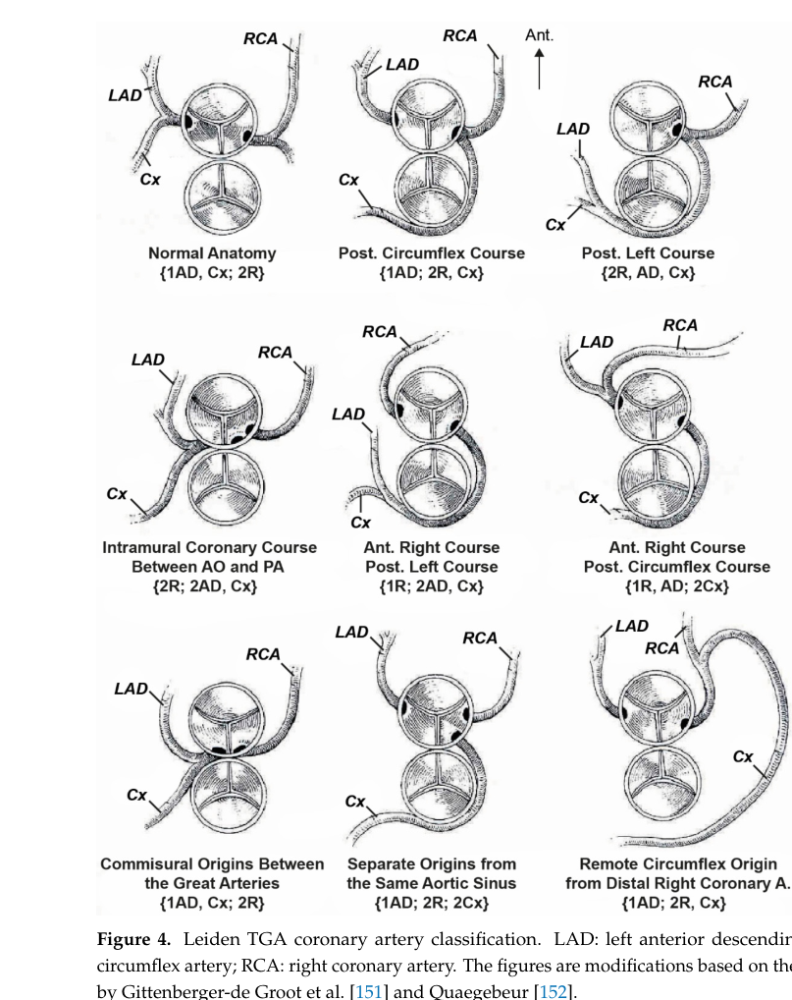

Dextro-transposition of the great arteries (d-TGA) is a cyanotic congenital heart defect characterized by atrioventricular concordance and ventriculoarterial discordance: the aorta arises from the morphologic right ventricle and the pulmonary artery arises from the morphologic left ventricle. This produces two parallel circulations rather than the normal series circulation, so deoxygenated systemic venous blood is recirculated to the body and oxygenated pulmonary venous blood is recirculated to the lungs. Postnatal survival depends on intercirculatory mixing through a patent foramen ovale, patent ductus arteriosus, or ventricular septal defect. Developmentally d-TGA arises from abnormal conotruncal/outflow-tract septation and cardiac looping, with contributions from cardiac neural crest cells, the second heart field, and laterality/transcription-factor genes. Untreated d-TGA is rapidly fatal; the modern definitive repair is the neonatal arterial switch operation, preceded by prostaglandin E1 to maintain ductal patency and balloon atrial septostomy to improve atrial-level mixing.
Ask a research question about Dextro-Transposition of the Great Arteries. OpenScientist will conduct autonomous deep research using the Disorder Mechanisms Knowledge Base and PubMed literature (typically 10-30 minutes).
Do not include personal health information in your question. Questions and results are cached in your browser's local storage.
name: Dextro-Transposition of the Great Arteries
creation_date: "2026-06-08T00:00:00Z"
description: >-
Dextro-transposition of the great arteries (d-TGA) is a cyanotic congenital
heart defect characterized by atrioventricular concordance and ventriculoarterial
discordance: the aorta arises from the morphologic right ventricle and the
pulmonary artery arises from the morphologic left ventricle. This produces two
parallel circulations rather than the normal series circulation, so deoxygenated
systemic venous blood is recirculated to the body and oxygenated pulmonary venous
blood is recirculated to the lungs. Postnatal survival depends on intercirculatory
mixing through a patent foramen ovale, patent ductus arteriosus, or ventricular
septal defect. Developmentally d-TGA arises from abnormal conotruncal/outflow-tract
septation and cardiac looping, with contributions from cardiac neural crest cells,
the second heart field, and laterality/transcription-factor genes. Untreated d-TGA
is rapidly fatal; the modern definitive repair is the neonatal arterial switch
operation, preceded by prostaglandin E1 to maintain ductal patency and balloon
atrial septostomy to improve atrial-level mixing.
category: Complex
parents:
- Congenital heart defect
- Conotruncal defect
synonyms:
- complete transposition of the great arteries
- d-TGA
- TGA with ventriculoarterial discordance
disease_term:
preferred_term: dextro-looped transposition of the great arteries
term:
id: MONDO:0019443
label: dextro-looped transposition of the great arteries
has_subtypes:
- name: TGA-IVS
display_name: d-TGA with intact ventricular septum
description: >-
d-TGA with an intact ventricular septum is the most common anatomic form.
Intercirculatory mixing depends almost entirely on the patent foramen ovale
and patent ductus arteriosus, so these neonates are typically the most
profoundly cyanotic and present earliest. It is the classic indication for
early prostaglandin E1, balloon atrial septostomy, and neonatal arterial
switch operation.
evidence:
- reference: PMID:30860704
reference_title: "Transposition of the Great Arteries."
supports: SUPPORT
evidence_source: OTHER
snippet: >-
Completely parallel circulatory circuits are incompatible with life and
require a patent ductus arteriosus (PDA) or an atrial (ASD) or ventricular
septal defect (VSD) to allow the mixing of oxygenated and deoxygenated blood
explanation: >-
With an intact ventricular septum, survival depends on atrial- and
ductal-level mixing (PFO/PDA), explaining the profound early cyanosis of
this subtype.
- name: TGA-VSD
display_name: d-TGA with ventricular septal defect
description: >-
d-TGA with a ventricular septal defect allows additional intercirculatory
mixing at the ventricular level, often resulting in less severe early cyanosis
but a greater tendency to pulmonary overcirculation and congestive heart
failure.
evidence:
- reference: PMID:39200964
reference_title: "Pathogenesis and Surgical Treatment of Dextro-Transposition of the Great Arteries (D-TGA): Part II."
supports: SUPPORT
evidence_source: OTHER
snippet: >-
The typical concomitant cardiac anomalies that may occur in patients with
D-TGA include ventriculoseptal defects, patent ductus arteriosus, left
ventricular outflow tract obstruction (LVOTO), mitral and tricuspid valve
abnormalities, and coronary artery variations.
explanation: >-
A ventricular septal defect is among the typical concomitant anomalies and
defines this subtype, providing an additional ventricular-level mixing site.
- name: TGA-VSD-LVOTO
display_name: d-TGA with VSD and left ventricular outflow tract obstruction
description: >-
d-TGA with a ventricular septal defect and left ventricular outflow tract
obstruction (most often subpulmonary/pulmonary stenosis). The outflow
obstruction complicates the arterial switch operation and frequently requires
alternative anatomic repairs such as the Rastelli or Nikaidoh procedures.
evidence:
- reference: PMID:39200964
reference_title: "Pathogenesis and Surgical Treatment of Dextro-Transposition of the Great Arteries (D-TGA): Part II."
supports: SUPPORT
evidence_source: OTHER
snippet: >-
The recommended surgical correction methods include arterial switch
operation (ASO) and atrial switch operation (AtrSR), as well as the Rastelli
and Nikaidoh procedures.
explanation: >-
LVOTO combined with a VSD shifts repair away from a simple arterial switch
toward Rastelli/Nikaidoh-type procedures, distinguishing this subtype.
pathophysiology:
- name: Abnormal conotruncal septation and cardiac looping
description: >-
During cardiac development, the conotruncal (outflow-tract) septum normally
spirals as it descends, dividing the truncus arteriosus so that the aorta
aligns with the left ventricle and the pulmonary trunk with the right
ventricle. In d-TGA the conotruncal septum forms abnormally (non-spiraling /
linear), and abnormal cardiac looping/alignment results in the aorta arising
from the morphologic right ventricle and the pulmonary trunk from the
morphologic left ventricle. Cardiac neural crest cells and second-heart-field
progenitors that populate the outflow tract are central to this morphogenesis.
cell_types:
- preferred_term: migratory cardiac neural crest cell
term:
id: CL:2000073
label: migratory cardiac neural crest cell
biological_processes:
- preferred_term: heart looping
modifier: ABNORMAL
term:
id: GO:0001947
label: heart looping
- preferred_term: outflow tract septum morphogenesis
modifier: ABNORMAL
term:
id: GO:0003148
label: outflow tract septum morphogenesis
- preferred_term: cardiac neural crest cell development involved in outflow tract morphogenesis
modifier: ABNORMAL
term:
id: GO:0061309
label: cardiac neural crest cell development involved in outflow tract morphogenesis
evidence:
- reference: PMID:30860704
reference_title: "Transposition of the Great Arteries."
supports: SUPPORT
evidence_source: OTHER
snippet: >-
Dextro-TGA (d-TGA) occurs during cardiac development when the conotruncal
septum, which normally spirals toward the aortic sac, forms linearly.
explanation: >-
Directly identifies abnormal (linear, non-spiraling) conotruncal septation
as the developmental basis of the ventriculoarterial discordance.
- reference: PMID:39000221
reference_title: "Cardiac Development and Factors Influencing the Development of Congenital Heart Defects (CHDs): Part I."
supports: SUPPORT
evidence_source: OTHER
snippet: >-
Cardiac morphogenesis involves numerous types of cells originating outside
the initial cardiac crescent, including neural crest cells, cells of the
second heart field origin, and epicardial progenitor cells.
explanation: >-
Supports the role of neural crest and second-heart-field cells in the
outflow-tract morphogenesis whose disruption underlies d-TGA.
- reference: PMID:39000221
reference_title: "Cardiac Development and Factors Influencing the Development of Congenital Heart Defects (CHDs): Part I."
supports: SUPPORT
evidence_source: OTHER
snippet: >-
New techniques for studying heart development have revealed many aspects of
cardiac morphogenesis that are important in the development of CHDs, in
particular transposition of the great arteries.
explanation: >-
Connects the developmental cardiac morphogenesis program specifically to
transposition of the great arteries.
downstream:
- target: Ventriculoarterial discordance and parallel circulation
description: >-
Abnormal conotruncal septation/looping yields discordant great-vessel
connections, so the systemic and pulmonary circulations run in parallel
rather than in series.
evidence:
- reference: PMID:30860704
reference_title: "Transposition of the Great Arteries."
supports: SUPPORT
evidence_source: OTHER
snippet: >-
As a result, the aorta arises from the right ventricle, and the pulmonary
trunk emerges from the left ventricle.
explanation: >-
Establishes the causal link from abnormal conotruncal development to the
discordant ventriculoarterial connections that define d-TGA.
- target: Transposition of the great arteries
description: Abnormal outflow-tract septation and looping produce the defining transposed great-artery anatomy.
causal_link_type: DIRECT
- target: Ventricular septal defect
description: Abnormal conotruncal development can include ventricular septal malalignment or defect formation.
causal_link_type: INDIRECT_KNOWN_INTERMEDIATES
- target: Left ventricular outflow tract obstruction
description: Abnormal conotruncal development can produce left ventricular outflow tract obstruction in d-TGA variants.
causal_link_type: INDIRECT_KNOWN_INTERMEDIATES
- name: Ventriculoarterial discordance and parallel circulation
description: >-
With the aorta arising from the morphologic right ventricle and the pulmonary
artery from the morphologic left ventricle (with normal atrioventricular
connections), the systemic and pulmonary circulations form two separate,
parallel loops. Deoxygenated systemic venous blood is pumped back to the body
and oxygenated pulmonary venous blood is pumped back to the lungs, so without
a site of intercirculatory mixing the circulation is incompatible with life.
locations:
- preferred_term: aorta
term:
id: UBERON:0000947
label: aorta
- preferred_term: pulmonary artery
term:
id: UBERON:0002012
label: pulmonary artery
- preferred_term: heart right ventricle
term:
id: UBERON:0002080
label: heart right ventricle
- preferred_term: heart left ventricle
term:
id: UBERON:0002084
label: heart left ventricle
biological_processes:
- preferred_term: blood circulation
modifier: ABNORMAL
term:
id: GO:0008015
label: blood circulation
evidence:
- reference: PMID:39200964
reference_title: "Pathogenesis and Surgical Treatment of Dextro-Transposition of the Great Arteries (D-TGA): Part II."
supports: SUPPORT
evidence_source: OTHER
snippet: >-
As a result, the pulmonary and systemic circulations are separated [the
morphological right ventricle (RV) is connected to the aorta and the
morphological left ventricle (LV) is connected to the pulmonary artery].
explanation: >-
Directly states the parallel/separated circulations produced by the
discordant ventriculoarterial connections.
- reference: PMID:30860704
reference_title: "Transposition of the Great Arteries."
supports: SUPPORT
evidence_source: OTHER
snippet: >-
Completely parallel circulatory circuits are incompatible with life and
require a patent ductus arteriosus (PDA) or an atrial (ASD) or ventricular
septal defect (VSD) to allow the mixing of oxygenated and deoxygenated blood
explanation: >-
Establishes that the parallel circulation is lethal without intercirculatory
mixing, the central pathophysiologic consequence of d-TGA.
downstream:
- target: Mixing-dependent neonatal cyanosis
description: >-
Because the circulations are parallel, systemic oxygen delivery depends on
mixing of oxygenated and deoxygenated blood across a PFO, PDA, or VSD;
inadequate mixing produces severe neonatal hypoxemia and cyanosis.
evidence:
- reference: PMID:30860704
reference_title: "Transposition of the Great Arteries."
supports: SUPPORT
evidence_source: OTHER
snippet: >-
Patients with d-TGA typically present with cyanosis within the first 30
days of life.
explanation: >-
Links the parallel circulation and dependence on mixing to the
characteristic neonatal cyanotic presentation.
- target: Patent foramen ovale
description: Parallel circulation requires atrial-level mixing through a patent foramen ovale.
causal_link_type: INDIRECT_KNOWN_INTERMEDIATES
- target: Patent ductus arteriosus
description: Parallel circulation requires ductal-level mixing through a patent ductus arteriosus.
causal_link_type: INDIRECT_KNOWN_INTERMEDIATES
- name: Mixing-dependent neonatal cyanosis
description: >-
Systemic oxygen delivery in d-TGA depends on intercirculatory mixing across
the patent foramen ovale, patent ductus arteriosus, and/or a ventricular
septal defect. As the ductus closes after birth, mixing falls and profound
hypoxemia ensues, producing central cyanosis within the first days to weeks
of life. This dependence underlies the use of prostaglandin E1 to keep the
ductus open and balloon atrial septostomy to enlarge atrial-level mixing.
evidence:
- reference: PMID:30860704
reference_title: "Transposition of the Great Arteries."
supports: SUPPORT
evidence_source: OTHER
snippet: >-
Patients with d-TGA typically present with cyanosis within the first 30
days of life.
explanation: >-
Documents the timing and nature of the cyanotic presentation that results
from declining mixing as the neonatal shunts close.
downstream:
- target: Cyanosis
description: Inadequate intercirculatory mixing produces neonatal cyanosis.
causal_link_type: DIRECT
- target: Heart failure
description: Mixing-dependent hypoxemia and abnormal parallel circulation can progress to heart failure.
causal_link_type: INDIRECT_KNOWN_INTERMEDIATES
phenotypes:
- category: Clinical
name: Transposition of the great arteries
description: >-
The defining anatomic lesion: ventriculoarterial discordance with the aorta
arising from the right ventricle and the pulmonary artery from the left
ventricle (dextro-looped, complete transposition).
phenotype_term:
preferred_term: Dextrotransposition of the great arteries
term:
id: HP:0031348
label: Dextrotransposition of the great arteries
evidence:
- reference: PMID:39200964
reference_title: "Pathogenesis and Surgical Treatment of Dextro-Transposition of the Great Arteries (D-TGA): Part II."
supports: SUPPORT
evidence_source: OTHER
snippet: >-
It is characterized by ventriculoarterial (VA) connection discordance,
atrioventricular (AV) concordance, and a parallel relationship with D-TGA.
explanation: >-
Defines d-TGA by ventriculoarterial discordance with atrioventricular
concordance, the anatomic hallmark of the disease.
- category: Clinical
name: Cyanosis
description: >-
Central cyanosis presenting in the neonatal period due to systemic
recirculation of deoxygenated blood and inadequate intercirculatory mixing.
phenotype_term:
preferred_term: Cyanosis
term:
id: HP:0000961
label: Cyanosis
evidence:
- reference: PMID:30860704
reference_title: "Transposition of the Great Arteries."
supports: SUPPORT
evidence_source: OTHER
snippet: >-
Patients with d-TGA typically present with cyanosis within the first 30
days of life.
explanation: >-
Directly documents neonatal cyanosis as the characteristic presenting
phenotype of d-TGA.
- category: Clinical
name: Patent foramen ovale
description: >-
A patent foramen ovale provides essential atrial-level intercirculatory
mixing; in d-TGA it is a key determinant of postnatal survival and is
enlarged when needed by balloon atrial septostomy.
phenotype_term:
preferred_term: Patent foramen ovale
term:
id: HP:0001655
label: Patent foramen ovale
evidence:
- reference: PMID:30860704
reference_title: "Transposition of the Great Arteries."
supports: SUPPORT
evidence_source: OTHER
snippet: >-
Completely parallel circulatory circuits are incompatible with life and
require a patent ductus arteriosus (PDA) or an atrial (ASD) or ventricular
septal defect (VSD) to allow the mixing of oxygenated and deoxygenated blood
explanation: >-
Identifies atrial-level communication (alongside PDA/VSD) as required for
the mixing that sustains life in d-TGA.
- category: Clinical
name: Patent ductus arteriosus
description: >-
Ductal patency allows mixing between the parallel circulations; prostaglandin
E1 is used to maintain the ductus arteriosus open before definitive repair.
phenotype_term:
preferred_term: Patent ductus arteriosus
term:
id: HP:0001643
label: Patent ductus arteriosus
evidence:
- reference: PMID:30860704
reference_title: "Transposition of the Great Arteries."
supports: SUPPORT
evidence_source: OTHER
snippet: >-
Completely parallel circulatory circuits are incompatible with life and
require a patent ductus arteriosus (PDA) or an atrial (ASD) or ventricular
septal defect (VSD) to allow the mixing of oxygenated and deoxygenated blood
explanation: >-
Establishes ductal patency as one of the mixing sites necessary for
survival in d-TGA.
- category: Clinical
name: Ventricular septal defect
subtype: TGA-VSD
description: >-
A ventricular septal defect is a common concomitant anomaly that provides an
additional ventricular-level mixing site and defines the TGA-VSD subtype.
phenotype_term:
preferred_term: Ventricular septal defect
term:
id: HP:0001629
label: Ventricular septal defect
evidence:
- reference: PMID:39200964
reference_title: "Pathogenesis and Surgical Treatment of Dextro-Transposition of the Great Arteries (D-TGA): Part II."
supports: SUPPORT
evidence_source: OTHER
snippet: >-
The typical concomitant cardiac anomalies that may occur in patients with
D-TGA include ventriculoseptal defects, patent ductus arteriosus, left
ventricular outflow tract obstruction (LVOTO), mitral and tricuspid valve
abnormalities, and coronary artery variations.
explanation: >-
Lists ventricular septal defect among the typical concomitant anomalies of
d-TGA, supporting the TGA-VSD subtype.
- category: Clinical
name: Left ventricular outflow tract obstruction
subtype: TGA-VSD-LVOTO
description: >-
Left ventricular outflow tract obstruction (often subpulmonary/pulmonary
stenosis) co-occurs with d-TGA and, when combined with a VSD, defines the
TGA-VSD-LVOTO subtype and influences the choice of surgical repair.
phenotype_term:
preferred_term: Left ventricular outflow tract obstruction
term:
id: HP:0032092
label: Left ventricular outflow tract obstruction
evidence:
- reference: PMID:39200964
reference_title: "Pathogenesis and Surgical Treatment of Dextro-Transposition of the Great Arteries (D-TGA): Part II."
supports: SUPPORT
evidence_source: OTHER
snippet: >-
The typical concomitant cardiac anomalies that may occur in patients with
D-TGA include ventriculoseptal defects, patent ductus arteriosus, left
ventricular outflow tract obstruction (LVOTO), mitral and tricuspid valve
abnormalities, and coronary artery variations.
explanation: >-
Lists LVOTO among the typical concomitant anomalies, supporting the
TGA-VSD-LVOTO subtype.
- category: Clinical
name: Heart failure
description: >-
Congestive heart failure can develop, particularly in d-TGA with a large VSD
causing pulmonary overcirculation, and is a recognized late postoperative
complication.
phenotype_term:
preferred_term: Congestive heart failure
term:
id: HP:0001635
label: Congestive heart failure
evidence:
- reference: PMID:39200964
reference_title: "Pathogenesis and Surgical Treatment of Dextro-Transposition of the Great Arteries (D-TGA): Part II."
supports: SUPPORT
evidence_source: OTHER
snippet: >-
The most common postoperative complications include coronary artery
stenosis, neoaortic root dilation, neoaortic insufficiency and neopulmonic
stenosis, right ventricular (RV) outflow tract obstruction (RVOTO), left
ventricular (LV) dysfunction, arrhythmias, and heart failure.
explanation: >-
Documents heart failure (and LV dysfunction/arrhythmias) among recognized
complications in the d-TGA clinical course.
genetic:
- name: Laterality and transcription-factor gene variants
association: Susceptibility (oligogenic/complex)
relationship_type: SUSCEPTIBILITY
notes: >-
Some cases of familial/isolated d-TGA are caused by mutations in laterality
genes (e.g., ZIC3, NODAL, FOXH1, CFC1, GDF1) and cardiac transcription
factors such as NKX2-5, placing TGA within the same disease spectrum as
heterotaxy and arguing for oligogenic/complex inheritance. Most d-TGA,
however, is sporadic with multifactorial pathogenesis.
evidence:
- reference: PMID:19933292
reference_title: "Familial transposition of the great arteries caused by multiple mutations in laterality genes."
supports: SUPPORT
evidence_source: HUMAN_CLINICAL
snippet: >-
The present study provides evidence that some cases of familial TGA are
caused by mutations in laterality genes and therefore are part of the same
disease spectrum of heterotaxy syndrome, and argues for an oligogenic or
complex mode of inheritance in these pedigrees.
explanation: >-
Directly supports laterality-gene mutations as a cause of familial TGA and
the oligogenic/complex inheritance model.
- reference: PMID:19933292
reference_title: "Familial transposition of the great arteries caused by multiple mutations in laterality genes."
supports: SUPPORT
evidence_source: HUMAN_CLINICAL
snippet: >-
Probands of seven families with isolated TGA and a family history of
concordant or discordant congenital heart disease were screened for
mutations in the ZIC3, ACVR2B, LEFTYA, CFC1, NODAL, FOXH1, GDF1, CRELD1,
GATA4 and NKX2.5 genes.
explanation: >-
Identifies the specific laterality/transcription-factor genes screened and
implicated in familial TGA.
- name: Common-variant polygenic susceptibility (WNT5A locus)
association: Polygenic susceptibility
relationship_type: SUSCEPTIBILITY
notes: >-
Beyond rare developmental-gene variants, a genome-wide association study in
1,237 d-TGA patients identified a common-variant susceptibility locus at
3p14.3 near WNT5A (a Wnt-family gene with a known role in cardiac outflow-tract
development), with SNP-based heritability indicating that a substantial
fraction of d-TGA susceptibility is attributable to common variation. This
supports a polygenic architecture in addition to monogenic/oligogenic causes.
evidence:
- reference: PMID:34886679
reference_title: "Common Genetic Variants Contribute to Risk of Transposition of the Great Arteries."
supports: SUPPORT
evidence_source: HUMAN_CLINICAL
snippet: >-
This work provides support for a polygenic architecture in D-TGA and
identifies a susceptibility locus on chromosome 3p14.3 near WNT5A.
explanation: >-
Directly establishes a common-variant susceptibility locus at 3p14.3 near
WNT5A and a polygenic architecture for d-TGA.
- reference: PMID:34886679
reference_title: "Common Genetic Variants Contribute to Risk of Transposition of the Great Arteries."
supports: SUPPORT
evidence_source: HUMAN_CLINICAL
snippet: >-
SNP-based heritability analysis showed that 25% of variance in
susceptibility to D-TGA may be explained by common variants.
explanation: >-
Quantifies the contribution of common genetic variation to d-TGA
susceptibility, supporting the polygenic model.
- reference: PMID:34886679
reference_title: "Common Genetic Variants Contribute to Risk of Transposition of the Great Arteries."
supports: SUPPORT
evidence_source: HUMAN_CLINICAL
snippet: >-
The genome-wide significant locus (3p14.3) co-localizes with a putative
regulatory element that interacts with the promoter of WNT5A, which encodes
the Wnt Family Member 5A protein known for its role in cardiac development in
mice.
explanation: >-
Links the susceptibility locus to WNT5A and Wnt signaling in cardiac
development, connecting common-variant genetics to outflow-tract morphogenesis.
environmental:
- name: Maternal pregestational diabetes
description: >-
Maternal type 1 diabetes is strongly associated with congenital heart defects
in offspring, with transposition of the great arteries showing one of the
highest risk estimates among CHD subgroups, supporting a teratogenic
contribution to d-TGA.
evidence:
- reference: PMID:38180757
reference_title: "Maternal Diabetes and Overweight and Congenital Heart Defects in Offspring."
supports: SUPPORT
evidence_source: HUMAN_CLINICAL
snippet: >-
This study found that maternal T1D was associated with increased risk for
most types of CHD in offspring
explanation: >-
Supports maternal type 1 diabetes as a risk factor for congenital heart
defects including transposition of the great arteries, which showed the
highest odds ratio among CHD subgroups in this study.
treatments:
- name: Prostaglandin E1
description: >-
Intravenous prostaglandin E1 maintains patency of the ductus arteriosus after
birth, preserving intercirculatory mixing and improving oxygenation as a
bridge to definitive repair in d-TGA.
treatment_term:
preferred_term: Pharmacotherapy
term:
id: NCIT:C15986
label: Pharmacotherapy
therapeutic_agent:
- preferred_term: prostaglandin E1
term:
id: CHEBI:15544
label: prostaglandin E1
evidence:
- reference: PMID:30860704
reference_title: "Transposition of the Great Arteries."
supports: SUPPORT
evidence_source: OTHER
snippet: >-
Completely parallel circulatory circuits are incompatible with life and
require a patent ductus arteriosus (PDA) or an atrial (ASD) or ventricular
septal defect (VSD) to allow the mixing of oxygenated and deoxygenated blood
explanation: >-
Maintaining ductal patency with prostaglandin E1 preserves the PDA-mediated
mixing that this source identifies as necessary for survival.
- name: Balloon atrial septostomy
description: >-
A catheter-based palliative procedure (Rashkind procedure) that enlarges the
interatrial communication to improve atrial-level mixing and stabilize the
neonate before the arterial switch operation.
treatment_term:
preferred_term: Therapeutic Procedure
term:
id: NCIT:C49236
label: Therapeutic Procedure
evidence:
- reference: PMID:39200964
reference_title: "Pathogenesis and Surgical Treatment of Dextro-Transposition of the Great Arteries (D-TGA): Part II."
supports: SUPPORT
evidence_source: OTHER
snippet: >-
Balloon atrial septostomy (BAS) is necessary prior to the operation.
explanation: >-
Identifies balloon atrial septostomy as a standard pre-operative
stabilizing procedure in d-TGA.
- name: Arterial switch operation
description: >-
The arterial switch operation is the preferred definitive anatomic repair,
restoring concordant ventriculoarterial connections by transecting and
reimplanting the great arteries with coronary transfer, typically performed in
the neonatal period.
treatment_term:
preferred_term: Surgical Procedure
term:
id: NCIT:C15329
label: Surgical Procedure
evidence:
- reference: PMID:39200964
reference_title: "Pathogenesis and Surgical Treatment of Dextro-Transposition of the Great Arteries (D-TGA): Part II."
supports: SUPPORT
evidence_source: OTHER
snippet: >-
Correction of the defect during infancy is the preferred treatment for
D-TGA.
explanation: >-
Supports surgical correction in infancy as the preferred definitive
treatment for d-TGA.
- reference: PMID:39200964
reference_title: "Pathogenesis and Surgical Treatment of Dextro-Transposition of the Great Arteries (D-TGA): Part II."
supports: SUPPORT
evidence_source: OTHER
snippet: >-
The recommended surgical correction methods include arterial switch
operation (ASO) and atrial switch operation (AtrSR), as well as the Rastelli
and Nikaidoh procedures.
explanation: >-
Identifies the arterial switch operation (and alternatives) as recommended
surgical corrections for d-TGA.
datasets: []
Question: You are an expert researcher providing comprehensive, well-cited information.
Provide detailed information focusing on: 1. Key concepts and definitions with current understanding 2. Recent developments and latest research (prioritize 2023-2024 sources) 3. Current applications and real-world implementations 4. Expert opinions and analysis from authoritative sources 5. Relevant statistics and data from recent studies
Format as a comprehensive research report with proper citations. Include URLs and publication dates where available. Always prioritize recent, authoritative sources and provide specific citations for all major claims.
Please provide a comprehensive research report on Dextro-Transposition of the Great Arteries covering all of the disease characteristics listed below. This report will be used to populate a disease knowledge base entry. Be thorough and cite primary literature (PMID preferred) for all claims.
For each section, suggested databases/resources are listed. These are the first places you should search for information on each topic.
Search first: OMIM, Orphanet, ICD-10/ICD-11, MeSH, PubMed
Search first: PubMed, Cochrane Library, UpToDate, clinical guidelines, ClinVar, ClinGen, GWAS Catalog, PheGenI, CTD, CDC, WHO, epidemiological databases
Search first: PubMed, Cochrane Library, clinical trial databases, GWAS Catalog, gnomAD, WHO, CDC, nutrition databases
Search first: CTD, PubMed, PheGenI, GxE databases
Search first: HPO (Human Phenotype Ontology), OMIM, Orphanet, PubMed, clinicaltrials.gov, MedDRA, SNOMED CT, DECIPHER, LOINC
For each phenotype, provide: - Phenotype type: symptoms, clinical signs, physical manifestations, behavioral changes, or laboratory abnormalities
For symptoms/signs: HPO, OMIM, Orphanet, PubMed For behavioral changes: HPO, DSM, RDoC (Research Domain Criteria), PubMed For laboratory abnormalities: LOINC, SNOMED CT, LabTests Online, PubMed - Phenotype characteristics: Search first: OMIM, Orphanet, HPO, PubMed - Age of symptom onset (neonatal, childhood, adult-onset, late-onset) - Symptom severity (mild, moderate, severe, variable) - Symptom progression (stable, progressive, episodic, fluctuating) - Frequency among affected individuals (percentage or qualitative) - Quality of life impact: Effects on daily functioning and well-being (per-phenotype when possible) Search first: EQ-5D database, SF-36, WHO QOL databases, PubMed - Suggest HPO (Human Phenotype Ontology) terms for each phenotype
Search first: OMIM, ClinVar, HGMD, Ensembl, NCBI Gene
Search first: ENCODE, Roadmap Epigenomics, MethBase, DiseaseMeth
Search first: DECIPHER, ClinVar, ECARUCA, UCSC Genome Browser
Search first: CTD (Comparative Toxicogenomics Database), TOXNET, PubMed, EPA databases
Search first: CDC databases, WHO, PubMed, NHANES
Search first: NCBI Taxonomy, ViPR, BV-BRC, MicrobeDB, GIDEON
Search first: KEGG, Reactome, WikiPathways, PathBank, BioCyc
Search first: Gene Ontology (GO), Reactome, KEGG, PubMed
Search first: UniProt, PDB (Protein Data Bank), InterPro, Pfam, AlphaFold
Search first: KEGG, BioCyc, HMDB (Human Metabolome Database), BRENDA
Search first: ImmPort, Immunome Database, IEDB, Gene Ontology
Search first: PubMed, Gene Ontology, Reactome
Search first: BRENDA, UniProt, KEGG, OMIM, PubMed
Search first: ENCODE, Roadmap Epigenomics, MethBase, DiseaseMeth
For each mechanism, describe: - The causal chain from initial trigger to clinical manifestation - Which mechanisms are upstream vs downstream - What cell types and biological processes are involved - Suggest GO terms for biological processes and CL terms for cell types
Search first: Uberon, FMA (Foundational Model of Anatomy), OMIM, HPO, ICD-11, MeSH, SNOMED CT
Search first: Uberon, Human Protein Atlas, Cell Ontology, Human Cell Atlas, CellMarker, PanglaoDB
Search first: Gene Ontology (Cellular Component), UniProt, Human Protein Atlas
Search first: OMIM, Orphanet, HPO, PubMed
Search first: Disease registries, longitudinal cohort databases, natural history studies, PubMed, Orphanet, OMIM
Search first: Orphanet, CDC, WHO, GBD (Global Burden of Disease), national registries, SEER, disease registries
Search first: GTR (Genetic Testing Registry), GeneReviews, ClinGen
For each treatment, suggest MAXO (Medical Action Ontology) terms where applicable.
Search first: CDC vaccine schedules, WHO immunization, FDA vaccine database
Search first: CDC, WHO, behavioral intervention databases, Cochrane Library
Search first: NSGC resources, ACMG guidelines, GeneReviews
Search first: Clinical guidelines, FDA approvals, PubMed
Search first: NCBI Taxonomy
Search first: VBO (Vertebrate Breed Ontology)
Search first: NCBI Gene
Structure your response as a comprehensive narrative organized by the sections above. For each section, provide: - Factual content with specific details (numbers, percentages, gene names, variant nomenclature) - Ontology term suggestions (HPO, GO, CL, UBERON, CHEBI, MAXO, MONDO) where applicable - Evidence citations with PMIDs - Direct quotes from abstracts to support key claims - Clear indication when information is not available or not applicable for this disease
This report will be used to populate a disease knowledge base entry with: - Pathophysiology descriptions with causal chains - Gene/protein annotations (HGNC, GO terms) - Phenotype associations (HP terms) with frequencies - Cell type involvement (CL terms) - Anatomical locations (UBERON terms) - Chemical entities (CHEBI terms) - Treatment annotations (MAXO terms) - Evidence items with PMIDs and exact abstract quotes - Epidemiology, prognosis, diagnostic, and prevention information - Animal model descriptions with phenotype recapitulation details
Dextro‑transposition of the great arteries (d‑TGA) is a critical cyanotic congenital heart defect characterized by ventriculoarterial discordance with atrioventricular concordance, producing parallel systemic and pulmonary circulations; survival after birth depends on intercirculatory mixing (e.g., ASD/PFO, VSD, PDA or catheter intervention). (zubrzycki2024pathogenesisandsurgical pages 3-5, zubrzycki2024pathogenesisandsurgical pages 1-2, zubrzycki2024pathogenesisandsurgical pages 2-3) Recent evidence supports a multifactorial etiology including rare laterality/outflow‑tract developmental gene variants, common polygenic risk (GWAS), and environmental/teratogenic factors (notably maternal diabetes and retinoid signaling perturbation). (zubrzycki2024pathogenesisandsurgical pages 5-7, ibrahim2023maternalpreexistingdiabetes pages 14-16, skoricmilosavljevic2022commongeneticvariants pages 1-2)
d‑TGA (also referred to as complete TGA, dextro‑TGA, or d‑loop TGA) is defined by aorta arising from the morphologic right ventricle and pulmonary artery arising from the morphologic left ventricle, with atrioventricular concordance; this produces “parallel” circulations rather than “in series,” leading to systemic hypoxemia without mixing. (zubrzycki2024pathogenesisandsurgical pages 3-5, zubrzycki2024pathogenesisandsurgical pages 2-3)
A concise normalization table is provided below.
| Concept | Value | Notes | Source/URL (if in evidence) |
|---|---|---|---|
| Preferred name | dextro-transposition of the great arteries | Common/standard disease name in retrieved reviews; severe congenital heart defect with ventriculoarterial discordance and atrioventricular concordance (zubrzycki2024pathogenesisandsurgical pages 1-2, zubrzycki2024pathogenesisandsurgical pages 2-3) | Zubrzycki et al., 2024, J Clin Med — https://doi.org/10.3390/jcm13164823 |
| Abbreviation | d-TGA; D-TGA | Both lowercase and uppercase forms used in retrieved sources (zubrzycki2024pathogenesisandsurgical pages 1-2, zubrzycki2024pathogenesisandsurgical pages 28-29) | Zubrzycki et al., 2024 — https://doi.org/10.3390/jcm13164823 |
| Alternative names | complete TGA; dextro-TGA; d-loop TGA; {S,D,D} (Van Praagh notation) | Retrieved sources distinguish this from congenitally corrected TGA; {S,D,D} explicitly reported for D-TGA (zubrzycki2024pathogenesisandsurgical pages 1-2, zubrzycki2024pathogenesisandsurgical pages 8-9, zubrzycki2024pathogenesisandsurgical pages 2-3) | Zubrzycki et al., 2024 — https://doi.org/10.3390/jcm13164823 |
| Related but distinct entity | congenitally corrected transposition of the great arteries (ccTGA) | Not a synonym; distinct entity often denoted l-loop/L-TGA; ccTGA {S,L,L} mentioned in retrieved evidence (zubrzycki2024pathogenesisandsurgical pages 28-29, zubrzycki2024pathogenesisandsurgical pages 7-8, zubrzycki2024pathogenesisandsurgical pages 2-3) | Zubrzycki et al., 2024 — https://doi.org/10.3390/jcm13164823 |
| ICD-10 | Q20.3 — Discordant ventriculoarterial connection | Explicitly listed in retrieved coding table for TGA/d-TGA categorization (rodgers2020mortalityamongstadults pages 92-96, rodgers2020mortalityamongstadults pages 88-92) | Rodgers, 2020 thesis — https://doi.org/10.5525/gla.thesis.81593 |
| ICD-9 | 745.1 — Transposition of the great arteries | Explicitly listed in retrieved coding table (rodgers2020mortalityamongstadults pages 92-96, rodgers2020mortalityamongstadults pages 88-92) | Rodgers, 2020 thesis — https://doi.org/10.5525/gla.thesis.81593 |
| ICD-9 (more specific entry) | 745.10 — Complete transposition of the great arteries | Explicitly listed in retrieved coding table; spelling normalized from thesis table (rodgers2020mortalityamongstadults pages 92-96) | Rodgers, 2020 thesis — https://doi.org/10.5525/gla.thesis.81593 |
| MeSH | Not found in retrieved sources | External controlled-vocabulary lookup needed | Not available in retrieved evidence (zubrzycki2024pathogenesisandsurgical pages 3-5, gottschalk2024dtranspositionofthe pages 1-2) |
| OMIM | Not found in retrieved sources | External database lookup needed | Not available in retrieved evidence (zubrzycki2024pathogenesisandsurgical pages 3-5, zubrzycki2024pathogenesisandsurgical pages 5-7) |
| Orphanet | Not found in retrieved sources | External database lookup needed | Not available in retrieved evidence (zubrzycki2024pathogenesisandsurgical pages 3-5, zubrzycki2024pathogenesisandsurgical pages 5-7) |
| MONDO | Not found in retrieved sources | External ontology lookup needed | Not available in retrieved evidence (zubrzycki2024pathogenesisandsurgical pages 3-5, zubrzycki2024pathogenesisandsurgical pages 5-7) |
Table: This table summarizes the core naming conventions and coding identifiers for dextro-transposition of the great arteries from the retrieved evidence. It is useful as a compact normalization artifact for mapping the disease across clinical and literature sources.
Note on missing ontology/database IDs: In the retrieved full texts, MeSH/OMIM/Orphanet/MONDO IDs were not explicitly stated; external database lookup is required for those identifiers. (zubrzycki2024pathogenesisandsurgical pages 3-5, zubrzycki2024pathogenesisandsurgical pages 5-7)
The content summarized here is derived from aggregated disease‑level resources (reviews, guidelines-like summaries, and observational cohorts), with some patient-level cohort analyses. (zubrzycki2024pathogenesisandsurgical pages 3-5, lin2024integratedprenataland pages 5-7, cucerea2024effectsofprostaglandin pages 1-2)
d‑TGA is generally considered multifactorial, involving genetic susceptibility (rare and common variants), epigenetic mechanisms, and environmental exposures influencing embryonic outflow‑tract development and left–right patterning. (zubrzycki2024pathogenesisandsurgical pages 5-7, ibrahim2023maternalpreexistingdiabetes pages 14-16)
Genes repeatedly implicated in association with d‑TGA include MED13L, ZIC3, FOXH1, CFC1, GDF1, NODAL, and NKX2‑5; 22q11 deletions have also been reported in some cases. (zubrzycki2024pathogenesisandsurgical pages 5-7, zubrzycki2024pathogenesisandsurgical pages 32-33)
Familial recurrence is low but non‑zero, consistent with multifactorial/polygenic inheritance; sibling recurrence is reported at ~0.2–1.7%. (zubrzycki2024pathogenesisandsurgical pages 5-7, zubrzycki2024pathogenesisandsurgical pages 7-8)
A large international GWAS (Circulation Research, 2022) identified a genome‑wide significant susceptibility locus at 3p14.3 (lead SNP rs56219800; meta‑analysis P=8.6×10−10; OR=0.69 per C allele), with SNP‑based heritability estimating ~25% of variance in d‑TGA susceptibility attributable to common variation. Functional follow‑up supported WNT5A as the likely causal gene at this locus through enhancer assays and cross‑species (mouse/zebrafish) reporter activity and TBX20 binding/attenuation of Wnt5a. (skoricmilosavljevic2022commongeneticvariants pages 3-4, skoricmilosavljevic2022commongeneticvariants pages 1-2)
A 2024 review summarizes epidemiologic associations including maternal diabetes (gestational diabetes in a cited population study increasing risk “at least two‑fold”), maternal pesticide exposure, first‑trimester antiepileptic/hormonal drugs, maternal respiratory infections/viral exposures, ibuprofen/ionizing radiation exposure, in vitro fertilization, and vitamin A/retinoic acid exposure. (zubrzycki2024pathogenesisandsurgical pages 5-7, zubrzycki2024pathogenesisandsurgical pages 7-8)
Maternal pregestational diabetes is a strong non‑inherited risk factor for congenital heart defects overall, with estimates in the reviewed literature ranging from ~3–5‑fold to up to ~8‑fold increased risk versus non‑diabetic pregnancies, with hyperglycemia as a key teratogen. (ibrahim2023maternalpreexistingdiabetes pages 1-2)
No specific protective genetic variants or environmental protective factors were identified in the retrieved evidence set for d‑TGA (beyond implied prevention via avoidance/control of teratogenic exposures such as hyperglycemia/retinoids). (ibrahim2023maternalpreexistingdiabetes pages 1-2, zubrzycki2024pathogenesisandsurgical pages 5-7)
Mechanistic work summarized in a 2023 review of maternal diabetes proposes “two‑hit” gene–environment interactions whereby maternal hyperglycemia may interact with susceptibility variants (e.g., NKX2‑5) to increase CHD risk; hyperglycemia‑driven metabolic shifts may alter epigenetic cofactors (e.g., NADH, α‑KG, acetyl‑CoA) and chromatin accessibility, affecting cardiogenesis and outflow‑tract development. (ibrahim2023maternalpreexistingdiabetes pages 14-16, ibrahim2023maternalpreexistingdiabetes pages 7-8)
d‑TGA typically presents in the neonatal period with central cyanosis that does not resolve with 100% oxygen; clinical deterioration can occur rapidly with physiologic ductus arteriosus closure (often within 24–48 h). (zubrzycki2024pathogenesisandsurgical pages 8-9)
Severity is strongly determined by adequacy of mixing across atrial/ventricular septal communications and the ductus; with large ASD/VSD/PDA there may be less cyanosis but signs of circulatory insufficiency (tachypnea, hepatomegaly, irritability). (zubrzycki2024pathogenesisandsurgical pages 8-9)
Subtypes and approximate frequencies were summarized as: TGA with intact interventricular septum (TGA/IVS) ~36%, TGA with VSD ~29%, and TGA with LV outflow obstruction/pulmonary stenosis ~26%. (zubrzycki2024pathogenesisandsurgical pages 8-9)
VSD overall frequency is reported ~20–40%; LVOTO occurs in ~5–25% (with higher rates in TGA/VSD than TGA/IVS in the review). (zubrzycki2024pathogenesisandsurgical pages 7-8)
After arterial switch operation (ASO), reported late sequelae include (review‑level estimates): neo‑aortic root dilation nearly universal (~100%), neoaortic regurgitation ~50% (moderate–severe <10%), supravalvular pulmonary stenosis ~10%, asymptomatic coronary artery occlusion 2–7%, arrhythmias 2–10%, and sudden cardiac death <1%. (zubrzycki2024pathogenesisandsurgical pages 18-20)
A 2024 intermediate-term imaging surveillance cohort (median follow‑up ~14 months) using echo + multislice CT reported: neo‑aortic regurgitation 60%, dilated aortic annulus 80%, dilated aortic root 90%, dilated sinotubular junction 70%, RPA stenosis 50%, LPA stenosis 35%, and coronary anomalies 45% (but no coronary stenosis detected). (rakha2024pulmonaryaortaand pages 1-2)
In a large observational cohort (1995–2022; published 2026 but includes modern era practice), neurological morbidity occurred in 4.6% and autism in 5.6% among prenatally diagnosed survivors after ASO (summarized as “~1 in 20” affected). (lillitos2026longtermoutcomefollowing pages 1-2)
Evidence gap: The retrieved set references a 2023 systematic review/meta-analysis on neurodevelopment after neonatal repair, but the pooled quantitative estimates were not available in the excerpts retrieved. (lillitos2026longtermoutcomefollowing pages 10-11)
The following HPO terms are suggested based on the reported clinical features and associated lesions (terms not exhaustively validated in retrieved texts): - Cyanosis (HP:0000969) (zubrzycki2024pathogenesisandsurgical pages 8-9) - Tachypnea (HP:0002789) (zubrzycki2024pathogenesisandsurgical pages 8-9) - Heart murmur (HP:0001635) (zubrzycki2024pathogenesisandsurgical pages 2-3) - Ventricular septal defect (HP:0001629) (zubrzycki2024pathogenesisandsurgical pages 7-8) - Patent ductus arteriosus (HP:0001643) (zubrzycki2024pathogenesisandsurgical pages 2-3) - Pulmonary artery stenosis (HP:0004415) (rakha2024pulmonaryaortaand pages 1-2) - Arrhythmia (HP:0011675) (zubrzycki2024pathogenesisandsurgical pages 18-20) - Aortic root dilatation (HP:0002616) (zubrzycki2024pathogenesisandsurgical pages 18-20)
Most d‑TGA cases are sporadic and genetically “elusive,” but both rare variants in developmental/laterality genes and common variants contribute. (zubrzycki2024pathogenesisandsurgical pages 5-7, skoricmilosavljevic2022commongeneticvariants pages 1-2)
Key 2022 GWAS findings: rs56219800 at 3p14.3 (protective C allele OR=0.69; P=8.6×10−10), ~25% SNP‑heritability, and functional evidence for a cardiac outflow‑tract enhancer contacting WNT5A and bound by TBX20, with cross-species reporter activity in mouse and zebrafish. (skoricmilosavljevic2022commongeneticvariants pages 3-4, skoricmilosavljevic2022commongeneticvariants pages 1-2)
The maternal diabetes review links altered metabolism (hyperglycemia) and ROS to epigenetic remodeling (cofactor availability for chromatin enzymes) and altered chromatin accessibility/Notch regulation, providing plausible epigenetic mechanisms for OFT defects. (ibrahim2023maternalpreexistingdiabetes pages 7-8, ibrahim2023maternalpreexistingdiabetes pages 14-16)
Environmental associations summarized for d‑TGA include maternal diabetes, pesticide exposure, infections (respiratory/influenza/viral), drug exposures (antiepileptics/hormones; ibuprofen), IVF conception, ionizing radiation, and retinoid/vitamin A exposure; quantification is generally not provided in the retrieved text except the “≥2‑fold” statement for gestational diabetes in one population study summary. (zubrzycki2024pathogenesisandsurgical pages 5-7, zubrzycki2024pathogenesisandsurgical pages 7-8)
At the anatomical level, d‑TGA reflects malalignment of the embryonic outflow tract such that ventriculoarterial connections are discordant (aorta from RV; PA from LV), producing parallel circulations. (zubrzycki2024pathogenesisandsurgical pages 3-5)
Two historical embryologic theories summarized in 2024 include: (i) extracardiac theory—failure of spiralization of the aortopulmonary septum (linear rather than spiral septation), and (ii) infundibular (conal) theory—abnormal conal development/rotation (lack of normal clockwise rotation with abnormal cone resorption/persistence). (zubrzycki2024pathogenesisandsurgical pages 3-5)
Molecular and cellular processes proposed upstream include disrupted spiraling migration/rotation of OFT cells and impaired LR patterning signaling; downstream consequences include coronary transfer complexity, impaired mixing physiology at birth, and long-term neo‑aortic/pulmonary/coronary complications after repair. (zubrzycki2024pathogenesisandsurgical pages 5-7, zubrzycki2024pathogenesisandsurgical pages 18-20)
Suggested GO Biological Process terms (not exhaustively validated in retrieved text): - Heart development (GO:0007507) - Cardiac ventricle development (GO:0003231) - Outflow tract morphogenesis (GO:0003282) - Determination of left/right symmetry (GO:0007368) (mechanistically supported by NODAL/LR evidence) (zubrzycki2024pathogenesisandsurgical pages 5-7) - Wnt signaling pathway (GO:0016055) (skoricmilosavljevic2022commongeneticvariants pages 9-10) - Retinoic acid receptor signaling pathway (GO:0048384) (zubrzycki2024pathogenesisandsurgical pages 5-7)
Suggested Cell Ontology (CL) terms: - Cardiac neural crest cell (CL:0000153) (supported as OFT contributor in mechanistic reviews of CHD/OFT) (nappi2024indepthgenomicanalysis pages 25-26) - Second heart field progenitor cell (no CL ID provided in retrieved text; concept supported) (ibrahim2023maternalpreexistingdiabetes pages 14-16)
Primary anatomical sites include the heart outflow tract and great arteries (aorta, pulmonary artery) and coronary arteries (origin/transfer patterns). (zubrzycki2024pathogenesisandsurgical pages 3-5, zubrzycki2024pathogenesisandsurgical pages 14-16)
Congenital, usually symptomatic in the first days of life with cyanosis; deterioration often follows ductal closure within 24–48 h. (zubrzycki2024pathogenesisandsurgical pages 8-9)
Acute neonatal stabilization is followed by definitive repair (ASO) in the early neonatal period (typically within first week to first 3 weeks). (zubrzycki2024pathogenesisandsurgical pages 16-18)
Prenatal diagnosis is most commonly made in the second trimester in multiple cohorts, with median fetal diagnosis ~21 weeks in a large longitudinal cohort and ~27.7 weeks mean in another. (lillitos2026longtermoutcomefollowing pages 1-2, lin2024integratedprenataland pages 2-5)
Key quantitative epidemiology and risk factors are summarized in the table below.
| Item | Quantitative data | Population/Study type | Notes/mechanism | Key citation (with URL and year) |
|---|---|---|---|---|
| Incidence | 20–30 per 100,000 live births | Disease review / epidemiology summary | d-TGA is a major cyanotic congenital heart defect in newborns | Zubrzycki et al., 2024, https://doi.org/10.3390/jcm13164823 (zubrzycki2024pathogenesisandsurgical pages 3-5) |
| Share of congenital heart defects | 5–7% of CHDs | Disease review / epidemiology summary | Also described as the second most common cyanotic CHD | Zubrzycki et al., 2024, https://doi.org/10.3390/jcm13164823 (zubrzycki2024pathogenesisandsurgical pages 3-5, zubrzycki2024pathogenesisandsurgical pages 1-2) |
| Sex ratio | Male:female ≈ 1.5:1 to 3.2:1 | Disease review / epidemiology summary | Male predominance is consistently reported | Zubrzycki et al., 2024, https://doi.org/10.3390/jcm13164823 (zubrzycki2024pathogenesisandsurgical pages 3-5) |
| Untreated mortality | 30% by 1 week; 50% by 1 month; 70% by 6 months; 90% by 1 year | Natural history summary before modern surgery | Mortality reflects parallel circulations with inadequate mixing if untreated | Zubrzycki et al., 2024, https://doi.org/10.3390/jcm13164823 (zubrzycki2024pathogenesisandsurgical pages 3-5, zubrzycki2024pathogenesisandsurgical pages 2-3) |
| Sibling/familial recurrence | 0.2–1.7% | Familial recurrence literature summarized in review | Supports low but non-zero recurrence; consistent with multifactorial/polygenic inheritance | Zubrzycki et al., 2024, https://doi.org/10.3390/jcm13164823 (zubrzycki2024pathogenesisandsurgical pages 5-7, zubrzycki2024pathogenesisandsurgical pages 7-8) |
| Noncardiac malformations | ~10% | Disease review / clinical spectrum summary | Mostly renal and cerebral anomalies; d-TGA is isolated in ~90% | Zubrzycki et al., 2024, https://doi.org/10.3390/jcm13164823 (zubrzycki2024pathogenesisandsurgical pages 3-5, zubrzycki2024pathogenesisandsurgical pages 7-8) |
| Maternal diabetes as d-TGA-specific risk factor | “At least two-fold” increased risk | Saudi population study summarized in 2024 review | Also associated with family history, increasing maternal age, and parity | Zubrzycki et al., 2024, https://doi.org/10.3390/jcm13164823 (zubrzycki2024pathogenesisandsurgical pages 7-8) |
| Maternal pregestational diabetes as CHD risk factor | 3–5-fold increased risk; up to 8-fold higher risk reported | 2023 review of human and model data on CHD | Hyperglycemia is proposed as the main teratogen, acting through ROS/oxidative stress and genetic/epigenetic dysregulation | Ibrahim et al., 2023, https://doi.org/10.3390/ijms242216258 (ibrahim2023maternalpreexistingdiabetes pages 1-2) |
| Environmental association: pesticides | Qualitative association reported | Review summary | Reported among maternal environmental risk factors for d-TGA | Zubrzycki et al., 2024, https://doi.org/10.3390/jcm13164823 (zubrzycki2024pathogenesisandsurgical pages 5-7, zubrzycki2024pathogenesisandsurgical pages 1-2) |
| Environmental association: retinoic acid / vitamin A exposure | Mouse model: trans-retinoic acid at E8.5 produced TGA in ~75% of fetuses | Experimental animal model summarized in review | Supports teratogenic disruption of outflow tract alignment; implicates TBX2–TGFβ2/retinoid signaling | Zubrzycki et al., 2024, https://doi.org/10.3390/jcm13164823 (zubrzycki2024pathogenesisandsurgical pages 5-7) |
| Environmental association: first-trimester medications | Qualitative association reported | Review summary | Antiepileptic and hormonal drug exposure in first trimester listed among associations | Zubrzycki et al., 2024, https://doi.org/10.3390/jcm13164823 (zubrzycki2024pathogenesisandsurgical pages 5-7) |
| Environmental association: maternal infections | Qualitative association reported | Review summary | Respiratory infections, influenza, and viral exposure listed among associations | Zubrzycki et al., 2024, https://doi.org/10.3390/jcm13164823 (zubrzycki2024pathogenesisandsurgical pages 5-7, zubrzycki2024pathogenesisandsurgical pages 1-2) |
| Environmental association: IVF conception | Qualitative association reported | Review summary | In vitro fertilization is listed among associated non-genetic factors | Zubrzycki et al., 2024, https://doi.org/10.3390/jcm13164823 (zubrzycki2024pathogenesisandsurgical pages 5-7, zubrzycki2024pathogenesisandsurgical pages 1-2) |
| Environmental association: ionizing radiation | Qualitative association reported | Review summary | Maternal ionizing radiation exposure listed among associated risk factors | Zubrzycki et al., 2024, https://doi.org/10.3390/jcm13164823 (zubrzycki2024pathogenesisandsurgical pages 5-7, zubrzycki2024pathogenesisandsurgical pages 1-2) |
Table: This table compiles the main quantitative epidemiology and risk-factor data for dextro-transposition of the great arteries from the retrieved evidence. It highlights baseline frequency, natural history without treatment, recurrence, and major maternal/environmental associations useful for a disease knowledge base.
Evidence supports predominantly sporadic occurrence with low recurrence risk, consistent with polygenic/multifactorial inheritance; sibling recurrence ~0.2–1.7%. (zubrzycki2024pathogenesisandsurgical pages 5-7, zubrzycki2024pathogenesisandsurgical pages 7-8)
Prenatal detection remains challenging because four-chamber view may be near normal; detection is improved by targeted outflow-tract assessment and three-vessel tracheal view. (guo2024prenataltranspositionof pages 5-8)
A 2024 study reports that comprehensive scanning including four-chamber, outflow tract, and three-vessel trachea sections can achieve detection rates “as high as 77%.” (guo2024prenataltranspositionof pages 5-8)
A 2024 review summarizes specific sonographic markers: parallel great arteries; two (instead of three) vessels in the three‑vessel trachea view; and pulmonary artery bifurcation from LVOT (“baby bird’s beak image”), plus “I‑shaped aorta,” “boomerang sign,” and abnormal aortic convexity. Prenatal detection “remains under 50%” in that review-level summary. (zubrzycki2024pathogenesisandsurgical pages 8-9)
Clinical suspicion is raised by central cyanosis unresponsive to 100% oxygen and saturation differences (pre/postductal) while ductus is patent. (zubrzycki2024pathogenesisandsurgical pages 8-9)
Transthoracic echocardiography with Doppler is the cornerstone for confirming ventriculoarterial discordance, defining associated shunts/lesions, and assessing adequacy of mixing and ventricular function. (moscatelli2024completetranspositionof pages 1-2, zubrzycki2024pathogenesisandsurgical pages 9-11)
Recent pediatric imaging reviews emphasize: - CMR for radiation‑free anatomic/functional assessment across lifespan and complex post‑surgical evaluation; and - Cardiac CT for high‑resolution delineation of coronary anatomy and vascular structures, especially if CMR is contraindicated or non-diagnostic. (moscatelli2024completetranspositionof pages 1-2)
In intermediate-term post‑ASO surveillance, echocardiography may be incomplete for PA/coronary evaluation, motivating adjunct multislice CT angiography. (rakha2024pulmonaryaortaand pages 1-2)
The retrieved texts support a heterogeneous genetic architecture (rare variants + common polygenic risk) but do not specify a single standardized gene panel; laterality genes and OFT/CHD genes (e.g., NODAL pathway genes, ZIC3, NKX2‑5) are highlighted as relevant candidates when genetic testing is pursued, especially with heterotaxy or extracardiac features. (zubrzycki2024pathogenesisandsurgical pages 5-7, zubrzycki2024pathogenesisandsurgical pages 32-33)
Without surgery, neonatal mortality is extremely high (30% at 1 week, 50% at 1 month, 70% at 6 months, 90% at 1 year). (zubrzycki2024pathogenesisandsurgical pages 3-5)
With modern surgical repair, review-level summaries indicate short- and mid-term survival >90%. (zubrzycki2024pathogenesisandsurgical pages 3-5)
In a large longitudinal cohort of prenatally diagnosed d‑TGA, 30‑day survival after ASO was 95.5% and overall survival was 92.5%. (lillitos2026longtermoutcomefollowing pages 1-2)
Long-term survival in large centers is high, with review-level estimates of 10‑year survival 88–97% and 25‑year conditional survival 96.7%. (zubrzycki2024pathogenesisandsurgical pages 18-20)
A 2024 cohort evaluating cerebral perfusion/oxygenation found that all 83 neonates with D‑TGA received PGE1 within 2 hours after birth and 55.4% underwent BAS; PGE1 increased cerebral regional oxygen saturation (crSO2) from 47% to 50%, while BAS (PGE1+BAS group) increased crSO2 from 42% to 51% at 24 h. (cucerea2024effectsofprostaglandin pages 1-2)
A 2024 single-center cohort study revisiting BAS prior to ASO reported BAS in 73% of patients, with a modest SpO2 increase from 83% to 87% (P=0.007) and no change in NIRS; BAS was associated with later ASO timing (median 8 vs 4 days). (subramanian2024revisitingtherole pages 1-2)
Arterial switch operation (ASO/Jatene) is the standard anatomical correction performed in early neonatal life (often within first week to first 3 weeks). (zubrzycki2024pathogenesisandsurgical pages 16-18)
Early operative mortality in large centers is ~3% (review-level), and early deaths are frequently related to coronary transfer complications. (zubrzycki2024pathogenesisandsurgical pages 18-20)
Intermediate-term surveillance using echocardiography plus multislice CT provides detailed assessment of neo-aortic dilation, pulmonary artery stenosis, and coronary anomalies; echo alone had incomplete PA evaluation in 35% and incomplete coronary assessment in 40%, supporting multimodality follow-up. (rakha2024pulmonaryaortaand pages 1-2)
Suggested Medical Action Ontology (MAXO) terms (labels; IDs not retrieved in evidence): - Prostaglandin therapy (PGE1 infusion) (zubrzycki2024pathogenesisandsurgical pages 16-18) - Balloon atrial septostomy (zubrzycki2024pathogenesisandsurgical pages 16-18) - Arterial switch operation (zubrzycki2024pathogenesisandsurgical pages 16-18) - Cardiac computed tomography angiography (rakha2024pulmonaryaortaand pages 1-2) - Long-term congenital heart disease follow-up/surveillance (zubrzycki2024pathogenesisandsurgical pages 18-20)
Primary prevention is limited because d‑TGA is congenital and multifactorial; however, evidence supports reducing modifiable maternal risk exposures (notably glycemic control before and early in pregnancy for pregestational diabetes, and avoidance of known teratogens such as retinoids). (ibrahim2023maternalpreexistingdiabetes pages 1-2, zubrzycki2024pathogenesisandsurgical pages 5-7)
Secondary prevention is primarily prenatal detection (fetal echocardiography outflow-tract screening) and planned delivery at tertiary centers for immediate stabilization and catheter/surgical capability. (gottschalk2024dtranspositionofthe pages 1-2)
The retrieved evidence focuses on human disease, but multiple model-organism findings indicate conserved developmental mechanisms (mouse and zebrafish) relevant to d‑TGA risk pathways (e.g., retinoic acid perturbation; WNT5A regulatory element activity; Foxj1 models for laterality/cilia). (zubrzycki2024pathogenesisandsurgical pages 5-7, skoricmilosavljevic2022commongeneticvariants pages 9-10)
Model systems used to study mechanisms relevant to d‑TGA include: - Mouse retinoic acid exposure models inducing TGA at high frequency (~75% with trans‑retinoic acid at E8.5). (zubrzycki2024pathogenesisandsurgical pages 5-7) - Mouse laterality gene models (e.g., PITX2-related) producing OFT rotational anomalies including TGA/DORV. (zubrzycki2024pathogenesisandsurgical pages 5-7, nakajima2016mechanismresponsiblefor pages 1-6) - Cross‑species functional genomics in mouse and zebrafish showing activity of a human enhancer at the d‑TGA GWAS locus contacting WNT5A and bound by TBX20. (skoricmilosavljevic2022commongeneticvariants pages 9-10, skoricmilosavljevic2022commongeneticvariants pages 1-2)
References
(zubrzycki2024pathogenesisandsurgical pages 3-5): Marek Zubrzycki, Rene Schramm, Angelika Costard-Jäckle, Michiel Morshuis, Jan F. Gummert, and Maria Zubrzycka. Pathogenesis and surgical treatment of dextro-transposition of the great arteries (d-tga): part ii. Journal of Clinical Medicine, 13:4823, Aug 2024. URL: https://doi.org/10.3390/jcm13164823, doi:10.3390/jcm13164823. This article has 16 citations.
(zubrzycki2024pathogenesisandsurgical pages 1-2): Marek Zubrzycki, Rene Schramm, Angelika Costard-Jäckle, Michiel Morshuis, Jan F. Gummert, and Maria Zubrzycka. Pathogenesis and surgical treatment of dextro-transposition of the great arteries (d-tga): part ii. Journal of Clinical Medicine, 13:4823, Aug 2024. URL: https://doi.org/10.3390/jcm13164823, doi:10.3390/jcm13164823. This article has 16 citations.
(zubrzycki2024pathogenesisandsurgical pages 2-3): Marek Zubrzycki, Rene Schramm, Angelika Costard-Jäckle, Michiel Morshuis, Jan F. Gummert, and Maria Zubrzycka. Pathogenesis and surgical treatment of dextro-transposition of the great arteries (d-tga): part ii. Journal of Clinical Medicine, 13:4823, Aug 2024. URL: https://doi.org/10.3390/jcm13164823, doi:10.3390/jcm13164823. This article has 16 citations.
(zubrzycki2024pathogenesisandsurgical pages 5-7): Marek Zubrzycki, Rene Schramm, Angelika Costard-Jäckle, Michiel Morshuis, Jan F. Gummert, and Maria Zubrzycka. Pathogenesis and surgical treatment of dextro-transposition of the great arteries (d-tga): part ii. Journal of Clinical Medicine, 13:4823, Aug 2024. URL: https://doi.org/10.3390/jcm13164823, doi:10.3390/jcm13164823. This article has 16 citations.
(ibrahim2023maternalpreexistingdiabetes pages 14-16): Stéphanie Ibrahim, Bénédicte Gaborit, Marien Lenoir, Gwenaelle Collod-Beroud, and Sonia Stefanovic. Maternal pre-existing diabetes: a non-inherited risk factor for congenital cardiopathies. International Journal of Molecular Sciences, 24:16258, Nov 2023. URL: https://doi.org/10.3390/ijms242216258, doi:10.3390/ijms242216258. This article has 27 citations.
(skoricmilosavljevic2022commongeneticvariants pages 1-2): Doris Škorić-Milosavljević, Rafik Tadros, Fernanda M. Bosada, Federico Tessadori, Jan Hendrik van Weerd, Odilia I. Woudstra, Fleur V.Y. Tjong, Najim Lahrouchi, Fanny Bajolle, Heather J. Cordell, A.J. Agopian, Gillian M. Blue, Daniela Q.C.M. Barge-Schaapveld, Marc Gewillig, Christoph Preuss, Elisabeth M. Lodder, Phil Barnett, Aho Ilgun, Leander Beekman, Karel van Duijvenboden, Regina Bokenkamp, Martina Müller-Nurasyid, Hubert W. Vliegen, Thelma C. Konings, Joost P. van Melle, Arie P.J. van Dijk, Roland R.J. van Kimmenade, Jolien W. Roos-Hesselink, Gertjan T. Sieswerda, Folkert Meijboom, Hashim Abdul-Khaliq, Felix Berger, Sven Dittrich, Marc-Phillip Hitz, Julia Moosmann, Frank-Thomas Riede, Stephan Schubert, Pilar Galan, Mark Lathrop, Hans M. Munter, Ammar Al-Chalabi, Christopher E. Shaw, Pamela J. Shaw, Karen E. Morrison, Jan H. Veldink, Leonard H. van den Berg, Sylvia Evans, Marcelo A. Nobrega, Ivy Aneas, Milena Radivojkov-Blagojević, Thomas Meitinger, Erwin Oechslin, Tapas Mondal, Lynn Bergin, John F. Smythe, Luis Altamirano-Diaz, Jane Lougheed, Berto J. Bouma, Marie-A. Chaix, Jennie Kline, Anne S. Bassett, Gregor Andelfinger, Roel L.F. van der Palen, Patrice Bouvagnet, Sally-Ann B. Clur, Jeroen Breckpot, Wilhelmina S. Kerstjens-Frederikse, David S. Winlaw, Ulrike M.M. Bauer, Seema Mital, Elizabeth Goldmuntz, Bernard Keavney, Damien Bonnet, Barbara J. Mulder, Michael W.T. Tanck, Jeroen Bakkers, Vincent M. Christoffels, Cornelis J. Boogerd, Alex V. Postma, and Connie R. Bezzina. Common genetic variants contribute to risk of transposition of the great arteries. Circulation Research, 130:166-180, Jan 2022. URL: https://doi.org/10.1161/circresaha.120.317107, doi:10.1161/circresaha.120.317107. This article has 39 citations and is from a highest quality peer-reviewed journal.
(zubrzycki2024pathogenesisandsurgical pages 28-29): Marek Zubrzycki, Rene Schramm, Angelika Costard-Jäckle, Michiel Morshuis, Jan F. Gummert, and Maria Zubrzycka. Pathogenesis and surgical treatment of dextro-transposition of the great arteries (d-tga): part ii. Journal of Clinical Medicine, 13:4823, Aug 2024. URL: https://doi.org/10.3390/jcm13164823, doi:10.3390/jcm13164823. This article has 16 citations.
(zubrzycki2024pathogenesisandsurgical pages 8-9): Marek Zubrzycki, Rene Schramm, Angelika Costard-Jäckle, Michiel Morshuis, Jan F. Gummert, and Maria Zubrzycka. Pathogenesis and surgical treatment of dextro-transposition of the great arteries (d-tga): part ii. Journal of Clinical Medicine, 13:4823, Aug 2024. URL: https://doi.org/10.3390/jcm13164823, doi:10.3390/jcm13164823. This article has 16 citations.
(zubrzycki2024pathogenesisandsurgical pages 7-8): Marek Zubrzycki, Rene Schramm, Angelika Costard-Jäckle, Michiel Morshuis, Jan F. Gummert, and Maria Zubrzycka. Pathogenesis and surgical treatment of dextro-transposition of the great arteries (d-tga): part ii. Journal of Clinical Medicine, 13:4823, Aug 2024. URL: https://doi.org/10.3390/jcm13164823, doi:10.3390/jcm13164823. This article has 16 citations.
(rodgers2020mortalityamongstadults pages 92-96): Samuel C. Rodgers. Mortality amongst adults with congenital heart disease in scotland: a population study. Text, Jan 2020. URL: https://doi.org/10.5525/gla.thesis.81593, doi:10.5525/gla.thesis.81593. This article has 0 citations and is from a peer-reviewed journal.
(rodgers2020mortalityamongstadults pages 88-92): Samuel C. Rodgers. Mortality amongst adults with congenital heart disease in scotland: a population study. Text, Jan 2020. URL: https://doi.org/10.5525/gla.thesis.81593, doi:10.5525/gla.thesis.81593. This article has 0 citations and is from a peer-reviewed journal.
(gottschalk2024dtranspositionofthe pages 1-2): I. Gottschalk, A. Walter, T. Menzel, E. C. Weber, S. Wendt, N. Sreeram, U. Gembruch, C. Berg, and J. S. Abel. D-transposition of the great arteries with restrictive foramen ovale in the fetus: the dilemma of predicting the need for postnatal urgent balloon atrial septostomy. Archives of Gynecology and Obstetrics, 309:1353-1367, Mar 2024. URL: https://doi.org/10.1007/s00404-023-06997-8, doi:10.1007/s00404-023-06997-8. This article has 19 citations and is from a peer-reviewed journal.
(lin2024integratedprenataland pages 5-7): Xieyi Lin, Ying Huang, Wen Xie, Lu Chen, Yuping Huang, Yu Huang, Bingyu Ma, Shusheng Wen, and Wei Pan. Integrated prenatal and postnatal management for neonates with transposition of the great arteries: thirteen-year experience at a single center. Italian Journal of Pediatrics, Aug 2024. URL: https://doi.org/10.1186/s13052-024-01730-w, doi:10.1186/s13052-024-01730-w. This article has 5 citations and is from a peer-reviewed journal.
(cucerea2024effectsofprostaglandin pages 1-2): Manuela Cucerea, Maria-Livia Ognean, Alin-Constantin Pinzariu, Marta Simon, Laura Mihaela Suciu, Dana-Valentina Ghiga, Elena Moldovan, and Mihaela Moscalu. Effects of prostaglandin e1 and balloon atrial septostomy on cerebral blood flow and oxygenation in newborns diagnosed with transposition of the great arteries. Biomedicines, Sep 2024. URL: https://doi.org/10.3390/biomedicines12092018, doi:10.3390/biomedicines12092018. This article has 2 citations.
(zubrzycki2024pathogenesisandsurgical pages 32-33): Marek Zubrzycki, Rene Schramm, Angelika Costard-Jäckle, Michiel Morshuis, Jan F. Gummert, and Maria Zubrzycka. Pathogenesis and surgical treatment of dextro-transposition of the great arteries (d-tga): part ii. Journal of Clinical Medicine, 13:4823, Aug 2024. URL: https://doi.org/10.3390/jcm13164823, doi:10.3390/jcm13164823. This article has 16 citations.
(skoricmilosavljevic2022commongeneticvariants pages 3-4): Doris Škorić-Milosavljević, Rafik Tadros, Fernanda M. Bosada, Federico Tessadori, Jan Hendrik van Weerd, Odilia I. Woudstra, Fleur V.Y. Tjong, Najim Lahrouchi, Fanny Bajolle, Heather J. Cordell, A.J. Agopian, Gillian M. Blue, Daniela Q.C.M. Barge-Schaapveld, Marc Gewillig, Christoph Preuss, Elisabeth M. Lodder, Phil Barnett, Aho Ilgun, Leander Beekman, Karel van Duijvenboden, Regina Bokenkamp, Martina Müller-Nurasyid, Hubert W. Vliegen, Thelma C. Konings, Joost P. van Melle, Arie P.J. van Dijk, Roland R.J. van Kimmenade, Jolien W. Roos-Hesselink, Gertjan T. Sieswerda, Folkert Meijboom, Hashim Abdul-Khaliq, Felix Berger, Sven Dittrich, Marc-Phillip Hitz, Julia Moosmann, Frank-Thomas Riede, Stephan Schubert, Pilar Galan, Mark Lathrop, Hans M. Munter, Ammar Al-Chalabi, Christopher E. Shaw, Pamela J. Shaw, Karen E. Morrison, Jan H. Veldink, Leonard H. van den Berg, Sylvia Evans, Marcelo A. Nobrega, Ivy Aneas, Milena Radivojkov-Blagojević, Thomas Meitinger, Erwin Oechslin, Tapas Mondal, Lynn Bergin, John F. Smythe, Luis Altamirano-Diaz, Jane Lougheed, Berto J. Bouma, Marie-A. Chaix, Jennie Kline, Anne S. Bassett, Gregor Andelfinger, Roel L.F. van der Palen, Patrice Bouvagnet, Sally-Ann B. Clur, Jeroen Breckpot, Wilhelmina S. Kerstjens-Frederikse, David S. Winlaw, Ulrike M.M. Bauer, Seema Mital, Elizabeth Goldmuntz, Bernard Keavney, Damien Bonnet, Barbara J. Mulder, Michael W.T. Tanck, Jeroen Bakkers, Vincent M. Christoffels, Cornelis J. Boogerd, Alex V. Postma, and Connie R. Bezzina. Common genetic variants contribute to risk of transposition of the great arteries. Circulation Research, 130:166-180, Jan 2022. URL: https://doi.org/10.1161/circresaha.120.317107, doi:10.1161/circresaha.120.317107. This article has 39 citations and is from a highest quality peer-reviewed journal.
(ibrahim2023maternalpreexistingdiabetes pages 1-2): Stéphanie Ibrahim, Bénédicte Gaborit, Marien Lenoir, Gwenaelle Collod-Beroud, and Sonia Stefanovic. Maternal pre-existing diabetes: a non-inherited risk factor for congenital cardiopathies. International Journal of Molecular Sciences, 24:16258, Nov 2023. URL: https://doi.org/10.3390/ijms242216258, doi:10.3390/ijms242216258. This article has 27 citations.
(ibrahim2023maternalpreexistingdiabetes pages 7-8): Stéphanie Ibrahim, Bénédicte Gaborit, Marien Lenoir, Gwenaelle Collod-Beroud, and Sonia Stefanovic. Maternal pre-existing diabetes: a non-inherited risk factor for congenital cardiopathies. International Journal of Molecular Sciences, 24:16258, Nov 2023. URL: https://doi.org/10.3390/ijms242216258, doi:10.3390/ijms242216258. This article has 27 citations.
(zubrzycki2024pathogenesisandsurgical pages 18-20): Marek Zubrzycki, Rene Schramm, Angelika Costard-Jäckle, Michiel Morshuis, Jan F. Gummert, and Maria Zubrzycka. Pathogenesis and surgical treatment of dextro-transposition of the great arteries (d-tga): part ii. Journal of Clinical Medicine, 13:4823, Aug 2024. URL: https://doi.org/10.3390/jcm13164823, doi:10.3390/jcm13164823. This article has 16 citations.
(rakha2024pulmonaryaortaand pages 1-2): Shaimaa Rakha, Nihal M. Batouty, Ahmad AbdelAleem ElDerie, and Amira Hussein. Pulmonary, aorta, and coronary arteries post-arterial switch in transposition of great arteries: intermediate-term surveillance utilizing conventional echocardiography and cardiac multislice computed tomography. Italian Journal of Pediatrics, Jun 2024. URL: https://doi.org/10.1186/s13052-024-01686-x, doi:10.1186/s13052-024-01686-x. This article has 2 citations and is from a peer-reviewed journal.
(lillitos2026longtermoutcomefollowing pages 1-2): Peter Lillitos, Grace Moriarty, Thomas Witter, Conal Austin, Owen Miller, Gurleen K. Sharland, John M. Simpson, Vita Zidere, and Trisha V. Vigneswaran. Long-term outcome following prenatal diagnosis of transposition of the great arteries. Pediatric cardiology, Jul 2026. URL: https://doi.org/10.1007/s00246-025-03939-w, doi:10.1007/s00246-025-03939-w. This article has 1 citations and is from a peer-reviewed journal.
(lillitos2026longtermoutcomefollowing pages 10-11): Peter Lillitos, Grace Moriarty, Thomas Witter, Conal Austin, Owen Miller, Gurleen K. Sharland, John M. Simpson, Vita Zidere, and Trisha V. Vigneswaran. Long-term outcome following prenatal diagnosis of transposition of the great arteries. Pediatric cardiology, Jul 2026. URL: https://doi.org/10.1007/s00246-025-03939-w, doi:10.1007/s00246-025-03939-w. This article has 1 citations and is from a peer-reviewed journal.
(skoricmilosavljevic2022commongeneticvariants pages 9-10): Doris Škorić-Milosavljević, Rafik Tadros, Fernanda M. Bosada, Federico Tessadori, Jan Hendrik van Weerd, Odilia I. Woudstra, Fleur V.Y. Tjong, Najim Lahrouchi, Fanny Bajolle, Heather J. Cordell, A.J. Agopian, Gillian M. Blue, Daniela Q.C.M. Barge-Schaapveld, Marc Gewillig, Christoph Preuss, Elisabeth M. Lodder, Phil Barnett, Aho Ilgun, Leander Beekman, Karel van Duijvenboden, Regina Bokenkamp, Martina Müller-Nurasyid, Hubert W. Vliegen, Thelma C. Konings, Joost P. van Melle, Arie P.J. van Dijk, Roland R.J. van Kimmenade, Jolien W. Roos-Hesselink, Gertjan T. Sieswerda, Folkert Meijboom, Hashim Abdul-Khaliq, Felix Berger, Sven Dittrich, Marc-Phillip Hitz, Julia Moosmann, Frank-Thomas Riede, Stephan Schubert, Pilar Galan, Mark Lathrop, Hans M. Munter, Ammar Al-Chalabi, Christopher E. Shaw, Pamela J. Shaw, Karen E. Morrison, Jan H. Veldink, Leonard H. van den Berg, Sylvia Evans, Marcelo A. Nobrega, Ivy Aneas, Milena Radivojkov-Blagojević, Thomas Meitinger, Erwin Oechslin, Tapas Mondal, Lynn Bergin, John F. Smythe, Luis Altamirano-Diaz, Jane Lougheed, Berto J. Bouma, Marie-A. Chaix, Jennie Kline, Anne S. Bassett, Gregor Andelfinger, Roel L.F. van der Palen, Patrice Bouvagnet, Sally-Ann B. Clur, Jeroen Breckpot, Wilhelmina S. Kerstjens-Frederikse, David S. Winlaw, Ulrike M.M. Bauer, Seema Mital, Elizabeth Goldmuntz, Bernard Keavney, Damien Bonnet, Barbara J. Mulder, Michael W.T. Tanck, Jeroen Bakkers, Vincent M. Christoffels, Cornelis J. Boogerd, Alex V. Postma, and Connie R. Bezzina. Common genetic variants contribute to risk of transposition of the great arteries. Circulation Research, 130:166-180, Jan 2022. URL: https://doi.org/10.1161/circresaha.120.317107, doi:10.1161/circresaha.120.317107. This article has 39 citations and is from a highest quality peer-reviewed journal.
(zubrzycki2024pathogenesisandsurgical pages 31-32): Marek Zubrzycki, Rene Schramm, Angelika Costard-Jäckle, Michiel Morshuis, Jan F. Gummert, and Maria Zubrzycka. Pathogenesis and surgical treatment of dextro-transposition of the great arteries (d-tga): part ii. Journal of Clinical Medicine, 13:4823, Aug 2024. URL: https://doi.org/10.3390/jcm13164823, doi:10.3390/jcm13164823. This article has 16 citations.
(nappi2024indepthgenomicanalysis pages 25-26): Francesco Nappi. In-depth genomic analysis: the new challenge in congenital heart disease. International Journal of Molecular Sciences, Feb 2024. URL: https://doi.org/10.3390/ijms25031734, doi:10.3390/ijms25031734. This article has 18 citations.
(zubrzycki2024pathogenesisandsurgical pages 14-16): Marek Zubrzycki, Rene Schramm, Angelika Costard-Jäckle, Michiel Morshuis, Jan F. Gummert, and Maria Zubrzycka. Pathogenesis and surgical treatment of dextro-transposition of the great arteries (d-tga): part ii. Journal of Clinical Medicine, 13:4823, Aug 2024. URL: https://doi.org/10.3390/jcm13164823, doi:10.3390/jcm13164823. This article has 16 citations.
(zubrzycki2024pathogenesisandsurgical pages 16-18): Marek Zubrzycki, Rene Schramm, Angelika Costard-Jäckle, Michiel Morshuis, Jan F. Gummert, and Maria Zubrzycka. Pathogenesis and surgical treatment of dextro-transposition of the great arteries (d-tga): part ii. Journal of Clinical Medicine, 13:4823, Aug 2024. URL: https://doi.org/10.3390/jcm13164823, doi:10.3390/jcm13164823. This article has 16 citations.
(lin2024integratedprenataland pages 2-5): Xieyi Lin, Ying Huang, Wen Xie, Lu Chen, Yuping Huang, Yu Huang, Bingyu Ma, Shusheng Wen, and Wei Pan. Integrated prenatal and postnatal management for neonates with transposition of the great arteries: thirteen-year experience at a single center. Italian Journal of Pediatrics, Aug 2024. URL: https://doi.org/10.1186/s13052-024-01730-w, doi:10.1186/s13052-024-01730-w. This article has 5 citations and is from a peer-reviewed journal.
(guo2024prenataltranspositionof pages 5-8): Jie Guo, Wen Ling, Tingting Dang, Shan Guo, Hong Ma, Qiong Huang, Liqin Zeng, Zongjie Weng, and Qiumei Wu. Prenatal transposition of great arteries diagnosis and management: a chinese single-center study. Frontiers in Cardiovascular Medicine, Mar 2024. URL: https://doi.org/10.3389/fcvm.2024.1341005, doi:10.3389/fcvm.2024.1341005. This article has 0 citations and is from a peer-reviewed journal.
(moscatelli2024completetranspositionof pages 1-2): Sara Moscatelli, Martina Avesani, Nunzia Borrelli, Jolanda Sabatino, Valeria Pergola, Isabella Leo, Claudia Montanaro, Francesca Contini, Gabriella Gaudieri, Jessica Ielapi, Raffaella Motta, Marco Perrone, and Giovanni Di Salvo. Complete transposition of the great arteries in the pediatric field: a multimodality imaging approach. Children, 11:626, May 2024. URL: https://doi.org/10.3390/children11060626, doi:10.3390/children11060626. This article has 17 citations.
(zubrzycki2024pathogenesisandsurgical pages 9-11): Marek Zubrzycki, Rene Schramm, Angelika Costard-Jäckle, Michiel Morshuis, Jan F. Gummert, and Maria Zubrzycka. Pathogenesis and surgical treatment of dextro-transposition of the great arteries (d-tga): part ii. Journal of Clinical Medicine, 13:4823, Aug 2024. URL: https://doi.org/10.3390/jcm13164823, doi:10.3390/jcm13164823. This article has 16 citations.
(subramanian2024revisitingtherole pages 1-2): Sujata Subramanian, Sagar Jani, Andrew Well, Matthew F. Mikulski, Hitesh Agrawal, D Byron Holt, Neil Venardos, Carlos M. Mery, and Charles D. Fraser. Revisiting the role of balloon atrial septostomy prior to the arterial switch operation. World Journal for Pediatric & Congenital Heart Surgery, 15:746-752, Aug 2024. URL: https://doi.org/10.1177/21501351241252428, doi:10.1177/21501351241252428. This article has 4 citations.
(nakajima2016mechanismresponsiblefor pages 1-6): Yuji Nakajima. Mechanism responsible for d‐transposition of the great arteries: is this part of the spectrum of right isomerism? Congenital Anomalies, 56:196-202, Sep 2016. URL: https://doi.org/10.1111/cga.12176, doi:10.1111/cga.12176. This article has 18 citations and is from a peer-reviewed journal.
(ibrahim2023maternalpreexistingdiabetes pages 12-13): Stéphanie Ibrahim, Bénédicte Gaborit, Marien Lenoir, Gwenaelle Collod-Beroud, and Sonia Stefanovic. Maternal pre-existing diabetes: a non-inherited risk factor for congenital cardiopathies. International Journal of Molecular Sciences, 24:16258, Nov 2023. URL: https://doi.org/10.3390/ijms242216258, doi:10.3390/ijms242216258. This article has 27 citations.
